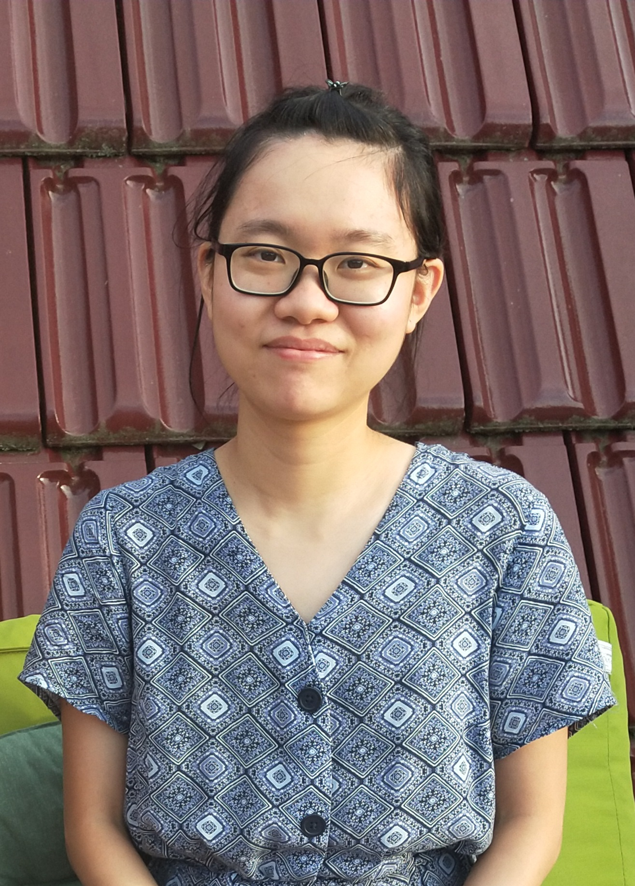
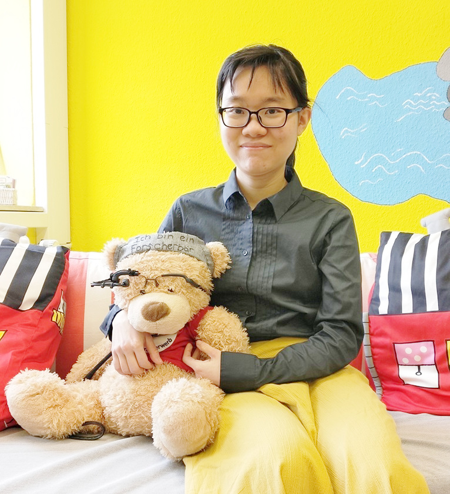

Sia Ming Yean

Sia is my family name and it's also how I introduce myself to others.

One of the coolest tools that I have used in my research — head-mounted eye-tracker (the one that Teddy is wearing).
About me
I am a developmental psychologist interested in curiosity and learning in young children. I am currently a post-doctoral researcher at Peking University, where I work with Dr. Ran Wei on AI-based interventions designed to improve children's narrative skills. I completed my PhD at the University of Nottingham (Malaysia Campus) under the supervision of Prof. Julien Mayor, examining children's word learning strategies. Following my PhD, I worked as a post-doctoral researcher at the University of Göttingen in Germany with Prof. Nivedita Mani and later at National Taiwan Normal University with Prof. Shinmin Wang.
From story time to research
When I was very young, my father told me many stories to keep me entertained, which sparked my early interest in books and reading. Once I started school, I would search the house for storybooks to read on my own. These early experiences gradually developed into a sustained interest in early language acquisition, where I study language learning in children, with a particular focus in how children choose what information to learn and how different interaction contexts shape their learning.
Fun fact
I speak five languages: Cantonese (native), English (near native), Mandarin (fluent), Malay (fluent), and German (functional).